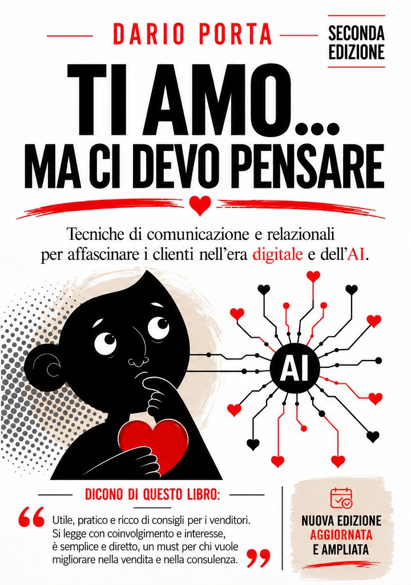

La vendita è una cosa seria.
Prenderla troppo sul serio, no.
Aiuto persone e aziende a vendere meglio, costruendo relazioni autentiche con i clienti anche nell'era digitale e dell'intelligenza artificiale.
Relazioni
Vendite
Risultati.
del libro
su Amazon
dei lettori
Bestseller Amazon
Non insegno
solo a vendere.
Sono Dario Porta, formatore commerciale e autore. Da anni lavoro con professionisti e aziende sul modo in cui comunicano, ascoltano, affrontano le obiezioni e costruiscono valore.
Il mio punto di partenza è semplice: dietro ogni vendita c'è una persona. E prima di convincere qualcuno, bisogna riuscire a comprenderlo.
La vendita cambia quando smetti di cercare la frase perfetta e inizi a fare la domanda giusta.
DARIO PORTAParlare di vendita
senza parlare da venditore.
Interviste, formazione, contenuti e confronto sul campo: il mio lavoro nasce dalla voglia di rendere la vendita più umana, concreta e utile.
Scopri il mio mondo →
Ti amo...
ma ci devo pensare
Tecniche di comunicazione e relazionali per affascinare i clienti nell'era digitale e dell'AI.
Una seconda edizione aggiornata e ampliata, pensata per chi vuole migliorare nella vendita e nella consulenza senza perdere la parte più importante: la relazione.
- ✔ Tecniche concrete e subito applicabili
- ✔ Esempi e casi pratici
- ✔ Comunicazione e gestione delle obiezioni
- ✔ Un ponte tra vendita, digitale e AI
BESTSELLER AMAZON
Sostituisci il link qui sopra con il link diretto alla pagina Amazon del libro.
Tecnica, empatia
e tanta pratica.
La vendita non è una collezione di trucchi. È metodo, ascolto, relazione e capacità di trasformare un bisogno in valore percepito.
Se vuoi conoscermi
un po' meglio.
Seguimi, leggi il libro, oppure portiamo la conversazione nel mondo reale.